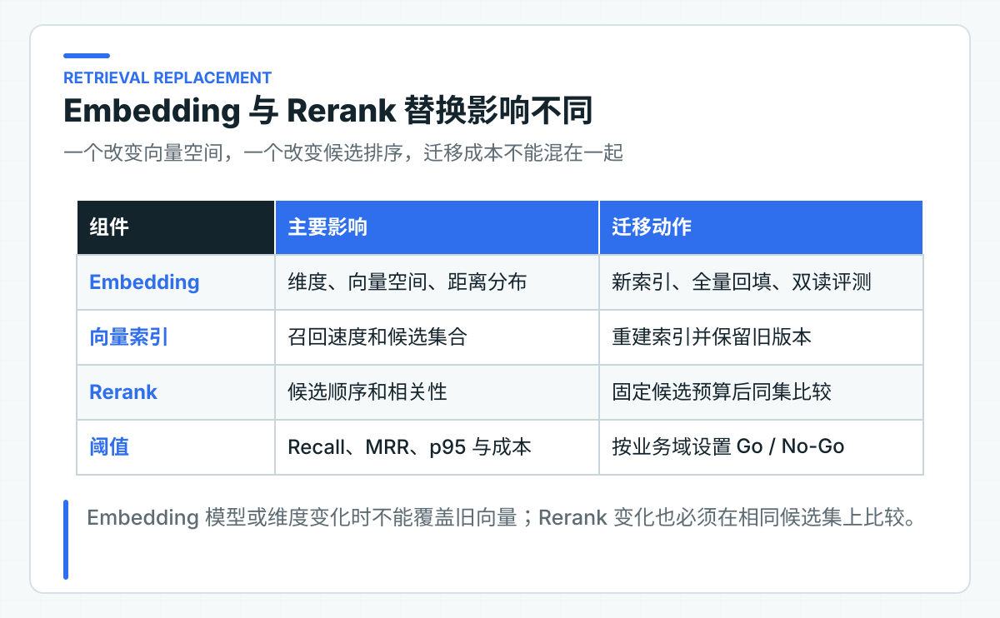
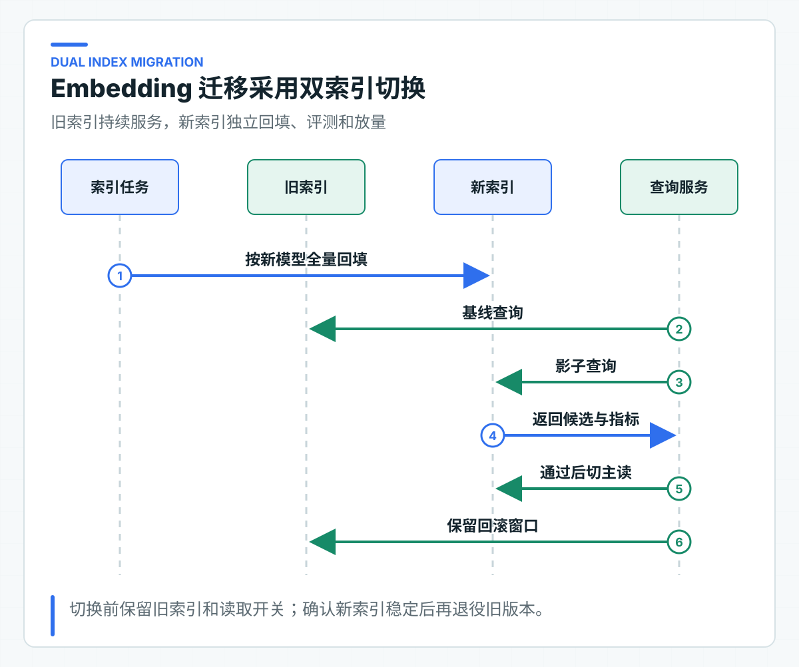

Embedding 与 Rerank 替换实验：怎样设计同集评测
Chat Provider 切换成功后，团队可能接着替换 Embedding 和 Rerank。三者看起来都属于“换模型”，影响范围却完全不同：Chat 改变生成行为，Embedding 会重建向量空间，Rerank 则改变候选顺序、延迟和成本。
即使两个 Embedding 模型输出维度相同，旧向量也不能直接与新查询向量混用。维度变化时，表结构、索引和回填任务还要一起调整。因此，文档版本、切分、ACL、问题和 TopK 要先固定，再分别比较召回与排序。
配套 lab 使用 Spring AI Alibaba 的 Options 描述候选配置，并用小型固定样例校验 Recall@K、MRR 和 p95 计算。具体模型效果仍要连接目标服务，用同一份 Golden Set 实测；公式单测只保证评测工具没有算错。
Embedding 负责召回，Rerank 负责排序
Embedding 把文本映射到向量空间。向量检索根据距离找候选，主要决定“可能相关的内容有没有进入候选集”。Rerank 接收查询和一批候选，对相关性重新打分，主要决定“候选的前后顺序是否更适合当前问题”。

如果召回阶段没有找到正确文档，Rerank 无法凭空恢复。相反，召回包含正确文档但排序靠后，Rerank 才可能改善 MRR 或最终 TopN。这个边界决定了评测顺序：先看召回，再看排序，最后看生成答案。
企业项目还要关注中文分词、短字段、专有名词、编号、表格、混合语言和政策条款。一个模型在通用语义检索上表现不错，不代表它能识别内部队列编码或制度编号。Golden Set 必须来自本公司的真实问题分布，并经过脱敏。
Embedding 变化会产生新索引版本
向量由模型、模型版本、输入文本和预处理共同决定。以下任一变化都应被视为新的索引版本：
- Embedding 模型或版本变化；
- 输出维度变化；
- 文本前缀、任务类型或
text_type变化； - 文档切分或规范化规则变化；
- 距离函数或向量标准化策略变化。
配套代码用 DomesticRetrievalProfile 表达模型、维度、Rerank 和 TopN：
public record DomesticRetrievalProfile(
String embeddingModel,
int dimensions,
String rerankModel,
int rerankTopN) {
public boolean requiresFullReindexFrom(DomesticRetrievalProfile previous) {
return previous == null
|| dimensions != previous.dimensions()
|| !embeddingModel.equals(previous.embeddingModel());
}
}
这里只把模型和维度作为最低重建条件。生产项目还应把切分器版本、文本规范化版本、距离函数和索引参数写进索引元数据，防止两个看似同模型的索引实际不可比较。
不要在原向量列上原地覆盖。回填途中，新旧向量混在一个索引中，查询结果没有明确语义，也无法安全回滚。
用同一 Golden Set 控制比较条件
一次有效替换实验需要固定：
- 文档集合与发布版本；
- 切分结果与 chunk id；
- tenant、department、有效期等 ACL 条件；
- 查询文本与预期文档 id；
- 候选预算、最终 TopK 和 Rerank TopN；
- 运行环境、并发和超时；
- Recall@K、MRR、p95、错误率和成本阈值。
如果替换 Embedding 的同时修改切分，又把 TopK 从 10 提到 50，就无法判断哪项改动带来了质量变化，延迟和成本也失去比较基础。确实需要组合优化时，应先完成单变量实验，再建立新的组合基线。
配套代码以 RetrievalGoldenCase 表达一条评测输入，包括预期文档、实际排序和耗时：
public record RetrievalGoldenCase(
String caseId,
List<String> expectedDocumentIds,
List<String> retrievedDocumentIds,
Duration latency) {
}
实验报告按样例平均 Recall 和 reciprocal rank，并从排序后的耗时取 p95，也就是 95% 样例不会超过的耗时。真实项目还应增加 HitRate、重复率、空召回率、ACL 泄露数和分组指标。
Recall@K 与 MRR 分别衡量覆盖和位置
Recall@K 关注预期文档是否出现在前 K 个候选中。若一个问题有两个可接受文档，返回一个时 Recall 为 0.5，两个都返回时为 1。
MRR 关注第一个正确结果的位置。正确文档排第一得 1，排第二得 0.5，排第四得 0.25。它能发现“召回到了，但总被无关内容压在后面”的问题。
两者必须结合。Recall 很高、MRR 很低，说明候选集合尚可但排序需要改善；MRR 高、Recall 低，可能是少数简单样例表现好，多个必要证据没有被完整召回。
生产阈值应按业务域分组。员工手册问答可以容忍较高拒答，资金政策和合规制度则更关注错误证据与越权结果。不要用一个全局 80% 通过率掩盖高风险分组失败。
候选预算限制 Rerank 的效果上限
Rerank 不是越多越好。候选数增加会提高计算量、网络负载和延迟，也可能把大量噪声带入排序。需要分别定义：
vectorCandidateK = 30
lexicalCandidateK = 30
fusionCandidateK = 40
rerankTopN = 8
answerTopK = 5
这些数字应由坏案例和容量测试确定。若正确文档常常进不了前 40，先改召回或 Query Rewrite；若正确文档已经在候选中但排序不稳，再评估 Rerank。
代码将配置映射为真实选项：
DashScopeEmbeddingOptions embeddingOptions = DashScopeEmbeddingOptions.builder()
.model("text-embedding-v4")
.dimensions(1024)
.textType("document")
.build();
DashScopeRerankOptions rerankOptions = DashScopeRerankOptions.builder()
.model("gte-rerank-v2")
.topN(3)
.returnDocuments(false)
.build();
文档向量和查询向量可能需要不同任务类型或文本前缀，具体以模型文档为准。接入或升级模型前，必须复核输入限制、维度、计费和区域可用性。
查询向量与文档向量成对管理
有些 Embedding 模型要求查询和文档使用不同的任务类型、前缀或输入模式。即使底层模型名相同，query 与 document 的编码策略也属于索引配置的一部分。文档回填时记录 documentProfileVersion，查询服务记录 queryProfileVersion，两者必须来自同一套已验证配置。
若只升级查询侧前缀而不重建文档向量，距离分布可能发生变化。短期评测偶尔提升，不代表长期稳定。建议把查询和文档配置一起写进索引发布记录，并在启动时校验当前读取索引是否支持当前查询 profile。
长文档还要明确截断策略。供应商超过输入上限时可能拒绝、截断或分段；静默截断会让 chunk 后半部分永远无法被召回。切分器应先保证单片段满足模型输入限制，Embedding 适配器再次校验并记录超限错误，不能依赖供应商默认处理。
用双索引完成迁移与回退

推荐流程：
- 创建新的 embedding_model_id 与 index_version；
- 新索引独立回填，不影响旧索引在线查询；
- 影子查询同时读取新旧索引，生成同集报告；
- 达到质量、延迟和成本阈值后，对内部 tenant 灰度；
- 通过读取开关切换主索引；
- 保留旧索引覆盖回滚窗口；
- 确认无回退需求后再退役旧版本。
索引任务要有租约、尝试预算、断点恢复和幂等。全量回填不是一个启动后等待结束的脚本；文档可能在回填期间继续发布，需要明确基线快照和增量追平点。
新旧链路保持相同 ACL
新旧索引比较时，tenant、department、文档状态和有效期过滤必须完全一致。若新链路为了方便先 TopK 再 Java 过滤，它可能看起来质量更好，实际已经扩大候选可见范围。
评测数据应包含越权对照样例：同一个问题在不同 tenant 或部门下，预期结果不同。指标需要统计正确召回，同时确认未授权文档从未进入候选和 Rerank 请求。
Rerank 服务接收的文档正文也属于数据出境与隐私边界。使用云服务前要确认数据分类、区域、保留策略和公司合规要求，必要时只发送低敏摘要或采用公司批准的部署方式。
还要检查缓存键。查询向量缓存至少包含模型、query profile、规范化文本和租户无关的安全边界；检索结果缓存则必须包含 tenant、department、索引版本和权限策略版本。为了提高命中率省略 ACL 字段，会把一次正确的模型替换变成跨租户数据泄露。
真实模型实验记录完整条件
至少记录：
- Embedding 与 Rerank 精确模型名；
- 维度、文本类型、候选预算和 TopN；
- 文档、切分、索引和 Golden Set 版本；
- 样例总数及分组；
- Recall@K、HitRate、MRR、p50/p95；
- 空召回、错误、限流和超时；
- 每千次查询成本或内部资源消耗；
- 失败样例及人工判断。
不要只保存一张“通过率 92%”截图。报告需要能回到具体问题、预期文档、实际排序和运行配置，否则下一次升级无法复用。
直接运行在线 Embedding 与 Rerank
在项目根 config/application-default.yml 填好 lab.dashscope 后，运行 DashScopeRetrievalLabApplication。入口会把三段政策文本发给真实 Embedding 服务，按余弦相似度形成初排，再把候选交给真实 Rerank 服务。
控制台同时打印：
embeddingRanking=[...]
rerankedRanking=[...]
recall=...
mrr=...
embeddingMs=...
rerankMs=...
OnlineRetrievalReplacementExperiment 只依赖 TextEmbeddingGateway 与 TextRerankGateway，框架响应不会扩散到指标计算。RetrievalReplacementExperiment 是不联网的边界样例，用来锁定重建判断和指标公式；在线体验始终从真实入口进入。
明确实验结论的适用范围
Spring AI Alibaba lab 现在覆盖在线 Embedding、在线 Rerank、选项映射、维度变化后的重建判断，以及 Recall、MRR 和分段耗时。三段演示文本让读者确认协议、排序与指标链路确实连通，确定性样例负责锁定公式和错误边界。
要比较具体模型效果，还要把入口中的三段文本替换为目标文档和授权数据集，并通过主项目 Eval Runner 扩大样本。几条样例可以证明调用链，无法替代知识库选型报告。
国内组件替换的价值可能来自合规、延迟、成本、中文效果或供应稳定性。最终选择应由实际评测和运行数据决定，而不是“国产模型更适合中文”的笼统判断。Provider 与检索组件都能替换后，才有必要评估编排结构；Graph 实验只选择人工确认这一条流程，不重写整个 Agent。